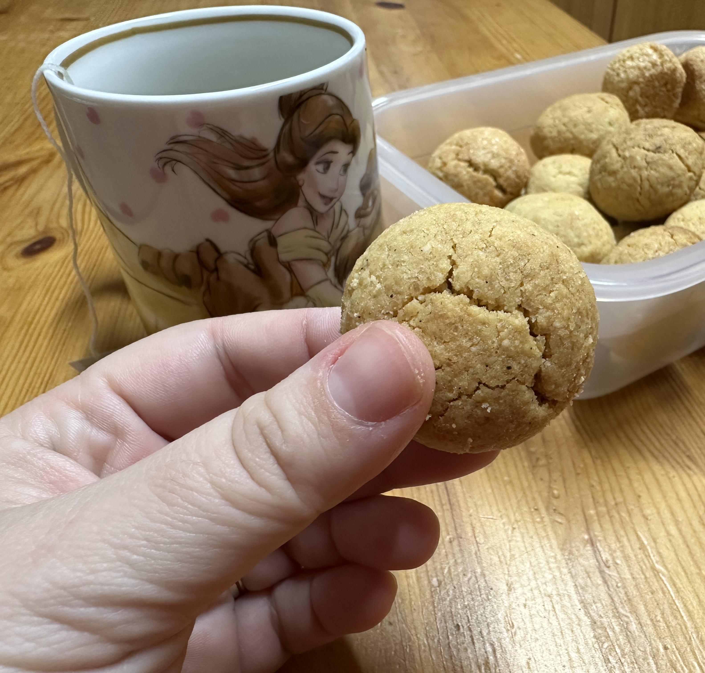

Bolacha de amêndoa e baunilha

Ingredientes
- 200 g de farinha de amêndoa
- 170 g de açúcar
- 200 g de farinha de trigo
- 200 g de manteiga fria, cortada em pedacinhos
- 2 gemas
Modo de preparo
- Em uma tigela, juntar a farinha de amêndoa, o açúcar e a farinha de trigo.
- Adicionar a manteiga e, com as pontas dos dedos, integrar os ingredientes, formando uma farofinha.
- Adicionar as gemas e, com as mãos, compactar a massa, fformando uma bola lisa.
- Moldar bolinhas e colocar em tabuleiro forrado com papel vegetal.
- Assar em forno pré-aquecido a 170º C por cerca de 20 minutos ou até que estejam douradinhas.
Observação
A massa pode ser refrigerada e congelada. Os biscoitos aguentam, bem fechados, cerca de 2 semanas.